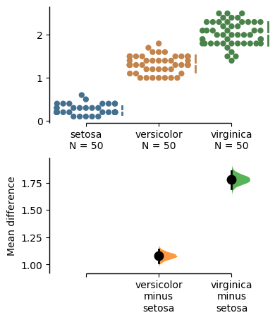
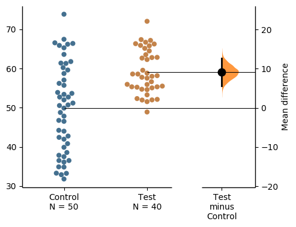
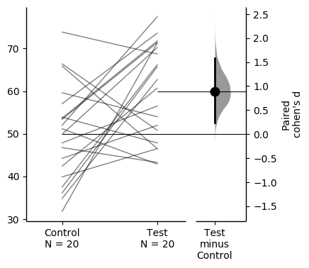
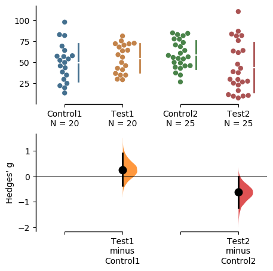
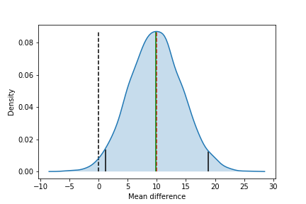

Estimation statisticsに基づいたデータの可視化ライブラリ -DABEST-

データを可視化する手法としては、棒グラフ(Barplot), 箱ひげ図(Boxplot), Jitter plot, Violin plot などがよく用いられます。しかし、これらの可視化手法は 有意差検定(null hypothesis significance testing; NHST) の結果を表示するためのものです。有意差検定は様々な分野の研究において広く用いられていますが、統計検定の結果の評価にp値を用いることは二分的な評価に繋がっています(例えばp<0.05ならOKでp>0.05ならダメ、という判断)。一方で、Estimation Statisticsはp値ではなく 効果量(effect size) に重きを置きます。つまり、効果がある/なしではなく、どのくらい効果があるか、を重視するということです。
今回紹介する DABEST (Data Analysis using Bootstrap-coupled ESTimation)はEstimation Statisticsに基づいたデータの可視化を行うためのライブラリ（パッケージ）です。 Python, R, Matlab に対応しています。以下はDABESTについての論文です。
J. Ho, T. Tumkaya, S. Aryal, H. Choi, A. Claridge-Chang. Moving beyond P values: Everyday data analysis with estimation plots. Nature Methods. (2019), 1548-7105. 10.1038/s41592-019-0470-3. (Nature Methods, bioRxiv)
ライブラリ
DABESTにはPython(DABEST-Python)とR(dabestr), Matlab(DABEST-Matlab)での実装があります。この記事ではPythonのライブラリを使用します。
Estimation Stats
このDABESTには著者らによる優れたHP(Estimation Stats)が存在します。このHPにはEstimation statisticsとDABESTで用いられる手法の解説があり、さらにcsvファイルをアップロードするだけでEstimation statisticsに基づいたデータの可視化ができるページもあります。コードを書く必要はなく、効果量としてどの指標を用いるか(Mean difference, Median difference, Cohen's d, hedges' g, Cliff's deltaなど)も選択できます。
DABESTチュートリアル
DABESTのチュートリアルは既に用意されています(Tutorial-dabest 0.2.4 documentation)。以下ではインストールの方法と簡単な使い方の紹介をします。
インストール
DABEST(0.24)は次のライブラリに依存しています(括弧内はバージョン)： numpy(1.15), scipy(1.2), matplotlib(3.0), seaborn(0.9), pandas(0.24)。基本的なライブラリですが、必要に応じてバージョンアップ(またはダウン)しましょう。DABESTのインストールは次のコマンドによりpipで行うことができます。
pip install dabest
Quickstart
インストールしたら、とりあえずコードが動くか確認してみましょう。
import pandas as pd
import matplotlib.pyplot as plt
import dabest
# Load the iris dataset. Requires internet access.
iris = pd.read_csv("https://github.com/mwaskom/seaborn-data/raw/master/iris.csv")
# Load the above data into `dabest`.
iris_dabest = dabest.load(data=iris, x="species", y="petal_width",
idx=("setosa", "versicolor", "virginica"))
# Produce a Cumming estimation plot and save plot.
iris_dabest.mean_diff.plot(fig_size=(5,7))
plt.savefig("quick_start.png")
以下のようなグラフが出力されれば成功です。

このグラフは Cumming plot という可視化の方法です。Estimation statisticsにおける可視化の方法としてはもう1つ Gardner-Altman plot というものがあります。以下ではこの2つの可視化方法の見方とコードについて紹介します。
Gardner-Altman plot
Gardner-Altman plot はM. GardnerとD. Altmanによって提案された描画法です。以下はGardner-Altman plotの例です。図の左側では両方の群のすべての観測値をJitter plotにより表示しています。右側にあるのは効果量の軸で、効果量の点推定(黒丸)と信頼区間(縦の黒棒)を表示しています。この効果量の信頼区間ですが、これは Bootstrap法 を用いて算出しています。なお、Bootstrap法に関しては後で詳しく述べます。

コードは次のようになっています。
import numpy as np
import pandas as pd
import matplotlib.pyplot as plt
import dabest
np.random.seed(20190623)
# Generate toy dataset
x1 = np.random.normal(loc=50, scale=10, size=50)
x2 = np.random.normal(loc=60, scale=5, size=40)
df = pd.DataFrame(data=[x1, x2]).T
df.columns = ['Control', 'Test']
# Load the above data into `dabest`.
df_dabest = dabest.load(data=df, idx=("Control", "Test"))
df_dabest.mean_diff.plot(fig_size=(5,4))
#df_dabest.cohens_d.plot(fig_size=(5,4))
plt.savefig("ga1.png", bbox_inches="tight")
Gardner-Altman plotには 対応のある2群(paired) のためのバージョンもあります。

ここでは効果量として Cohen's d を用いています。コードは次のようになります(ライブラリのインポートは省略)。
# Generate toy dataset
size = 20
idx = np.arange(0, size)
x1 = np.random.normal(loc=50, scale=10, size=size)
x2 = np.random.normal(loc=60, scale=10, size=size)
df = pd.DataFrame(data=[idx, x1, x2]).T
df.columns = ['idx', 'Control', 'Test']
# Load the above data into `dabest`.
df_dabest = dabest.load(data=df, idx=("Control", "Test"),
paired=True, id_col="idx")
df_dabest.cohens_d.plot(fig_size=(4,4))
#df_dabest.mean_diff.plot(fig_size=(4,4))
plt.savefig("ga2.png", bbox_inches="tight")
Cumming plot
Cumming plot はG. Cummingによって提案された描画法です。複数の群に対して2つ以上の効果量およびそれらの信頼区間を、今度は観測データの下に描画しています。

ここでは効果量として hedges' g を用いています。コードは次のようになります(ライブラリのインポートは省略)。
# Generate toy dataset
size1 = 20
size2 = 25
xc1 = np.random.normal(loc=50, scale=20, size=size1)
xt1 = np.random.normal(loc=55, scale=15, size=size1)
xc2 = np.random.normal(loc=60, scale=15, size=size2)
xt2 = np.random.normal(loc=50, scale=25, size=size2)
df = pd.DataFrame(data=[xc1, xt1, xc2, xt2]).T
df.columns = ['Control1', 'Test1', 'Control2', 'Test2']
# Load the above data into `dabest`.
df_dabest = dabest.load(data=df, idx=(("Control1", "Test1"),
("Control2", "Test2")))
#df_dabest.cohens_d.plot(fig_size=(5,5))
#df_dabest.mean_diff.plot(fig_size=(5,5))
df_dabest.hedges_g.plot(fig_size=(5,5))
plt.savefig("cumming.png", bbox_inches="tight")
Bootstrap Confidence Intervalについて
Bootstrap法で算出する信頼区間を Bootstrap Confidence Interval といいます。信頼区間を出すためには多数のサンプルが必要ですが、Bootstrap法により疑似的に実験を繰り返し、2群間での効果量を算出することで多数の効果量のサンプルを得ることで解決します。
DABESTによる実装を用いずに効果量の信頼区間を描画してみます。正規分布に従う2つの群(N(50, 202), N(60, 202))からそれぞれ50サンプルを得たとします。効果量を平均の差として、5000回ブートストラップを行い、効果量のサンプルを5000個得ます。この場合のコードは以下のようになります。描画のためのコードが多いですが、np.random.choice(x, size, replace=True)を用いればよい、というのが大事な部分です。
import numpy as np
import matplotlib.pyplot as plt
import seaborn as sns
np.random.seed(20190623)
# generate observation (toy data)
size = 50 # sample size
sigma = 20
mu1 = 50
mu2 = 60
diff_mu = abs(mu2 - mu1)
x1_obs = np.random.normal(loc=mu1, scale=sigma, size=size)
x2_obs = np.random.normal(loc=mu2, scale=sigma, size=size)
num_bootstrap = 5000
alpha = 0.025
es_bootstrap = np.zeros(num_bootstrap) # array to save bootstrapped effect size
for i in range(num_bootstrap):
# bootstrapping
x1_resampling = np.random.choice(x1_obs, size=size, replace=True)
x2_resampling = np.random.choice(x2_obs, size=size, replace=True)
# calculate effect size (mean difference) and save.
mu = np.mean(x2_resampling) - np.mean(x1_resampling)
es_bootstrap[i] += mu
# plot
ax = sns.kdeplot(es_bootstrap, shade=True)
data_x, data_y = ax.lines[0].get_data()
plt.vlines(0, ymin=0, ymax=data_y.max(), color='k', linestyle='dashed')
plt.vlines(diff_mu, ymin=0, ymax=data_y.max(), color='r', linestyle='dashed')
plt.vlines(np.mean(es_bootstrap), ymin=0, ymax=data_y.max(), color='g')
es_bootstrap_sorted = np.sort(es_bootstrap) # to plot 95% CI
idx_alpha = np.argmin(np.abs(data_x-es_bootstrap_sorted[int(num_bootstrap*alpha)]))
idx_one_m_alpha = np.argmin(np.abs(data_x-es_bootstrap_sorted[int(num_bootstrap*(1-alpha))]))
plt.vlines(es_bootstrap_sorted[int(num_bootstrap*alpha)], ymin=0, ymax=data_y[idx_alpha])
plt.vlines(es_bootstrap_sorted[int(num_bootstrap*(1-alpha))], ymin=0, ymax=data_y[idx_one_m_alpha])
plt.xlabel("Mean difference")
plt.ylabel("Density")
#plt.show()
plt.savefig("bootstrap_ci.png")
結果は次のようになります。

横軸が平均の差、縦軸が密度です。黒破線は0, 赤破線は真の分布の平均の差(今回であれば10)、緑実線は効果量の点推定(要は平均値)です。黒実線は第1, 3四分位数で、この間を95%信頼区間と近似しています(この信頼区間の算出手法を パーセンタイル法 といいます)。これは簡易な手法ですが、他にも算出方法はあります。
まとめ
- p値と共に効果量も報告しよう。
- 効果量も図の中に表示しよう。
- DABEST を用いれば簡単に効果量とその精度(信頼区間)を表示できる。
参考文献
- 前の記事 : がんゲノム変異シグネチャー解析
- 次の記事 : AtCoder Beginners Selection 雑感
- 関連記事 :